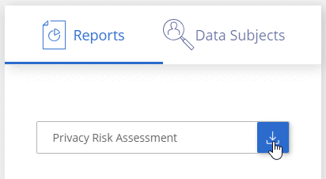

Notes de mise à jour
Notes de mise à jour
Afficher le rapport d'évaluation des risques pour la confidentialité
 Suggérer des modifications
Suggérer des modifications
Le rapport d’évaluation des risques pour la protection de la vie privée fournit une vue d’ensemble de l’état des risques pour la confidentialité de votre organisation, conformément aux réglementations en matière de confidentialité, telles que le Règlement sur la protection de la vie privée et l’ACFPC.

|
NetApp ne peut garantir une précision de 100 % des données personnelles et des données personnelles sensibles que Cloud Compliance identifie. Vous devez toujours valider les informations en examinant les données. |
Le rapport contient les informations suivantes :
- Statut de conformité
-
Un score de gravité (voir ci-dessous pour plus de détails) et la distribution des données, qu'elles soient personnelles, non sensibles ou sensibles.
- Présentation de l'évaluation
-
Une ventilation des types de données personnelles ainsi que des catégories de données.
- Sujets de données dans cette évaluation
-
Nombre de personnes par lieu pour lesquelles des identificateurs nationaux ont été trouvés.
Génération du rapport d'évaluation des risques pour la confidentialité
Accédez à l'onglet conformité pour générer le rapport.
-
En haut de Cloud Manager, cliquez sur Compliance.
-
Sous Rapports, cliquez sur l'icône de téléchargement en regard de évaluation des risques pour la vie privée.

Cloud Compliance génère un rapport PDF que vous pouvez consulter et envoyer à d'autres groupes si nécessaire.
Indice de gravité
Cloud Compliance calcule le score de gravité pour le rapport d'évaluation des risques liés à la confidentialité, sur la base de trois variables :
-
Pourcentage de données personnelles sur toutes les données.
-
Le pourcentage de données personnelles sensibles hors de toutes les données.
-
Le pourcentage de fichiers qui incluent des sujets de données, déterminé par des identificateurs nationaux tels que les ID nationaux, les numéros de sécurité sociale et les numéros d'identification fiscale.
La logique utilisée pour déterminer le score est la suivante :
| Indice de gravité | Logique |
|---|---|
0 |
Les trois variables sont exactement 0 % |
1 |
L'une des variables est supérieure à 0 % |
2 |
L'une des variables est supérieure à 3 % |
3 |
Deux des variables sont supérieures à 3 % |
4 |
Trois des variables sont supérieures à 3 % |
5 |
L'une des variables est supérieure à 6 % |
6 |
Deux des variables sont plus importantes de 6 % |
7 |
Trois des variables sont plus importantes de 6 % |
8 |
L'une des variables est supérieure à 15 % |
9 |
Deux des variables sont plus importantes de 15 % |
10 |
Trois des variables sont plus importantes de 15 % |